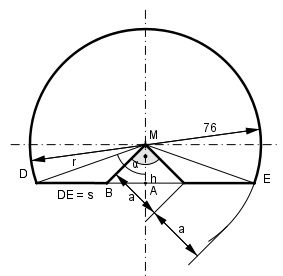

Aufgabe 240 Die dargestellte Lehre ist aus einer Scheibe von 76 mm Durchmesser herausgearbeitet worden. Wie groß ist der Blechabfall A?

2 * a = 38 mm | :2 a = 19 mm Satz von Pythagoras im gleichschenkligen Dreieck BAM: a2 = h2 + h2 a2 = 2 * h2 | :2 192 mm2 h2 = ---------- = 180,5 mm2 |√ 2 h = 13,4 mm Im rechtwinkligen Dreieck DAM: h 13,4 mm cos α = --- = ---------- = 0,3526 --> α = 69,4° r 38 mm Mittelpunktswinkel bei M = 2 * α = 2 * 69,35° = 138,7° Satz von Pythagoras im Dreieck DAM: s r2 = h2 + (---)2 |-h2 2 s2 r2 - h2 = ---- |*4 4 4 * (r2 - h2) = s2 s2 = 4 * (382 - 13,42) mm2 s2 = 5 057,8 |√ s = 71,1 mm A = Kreissektor – Dreieck1 + Dreieck2 382 mm2 * π * 138,7° Kreissektor = ---------------------- = 1746,9 mm2 360° 71,1 mm * 13,4 mm Dreieck1 = ------------------- = 476,4 mm2 2 19 mm * 19 mm Dreieck2 = --------------- = 180,5 mm2 2 A = 1 746,9 mm2 - 476,4 mm2 + 180,5 mm2 = = 1 451 mm2 Wenn jemand eine Lösung dieser Aufgabe ohne Winkelfunktionen kennt, bitte mir zuschicken.